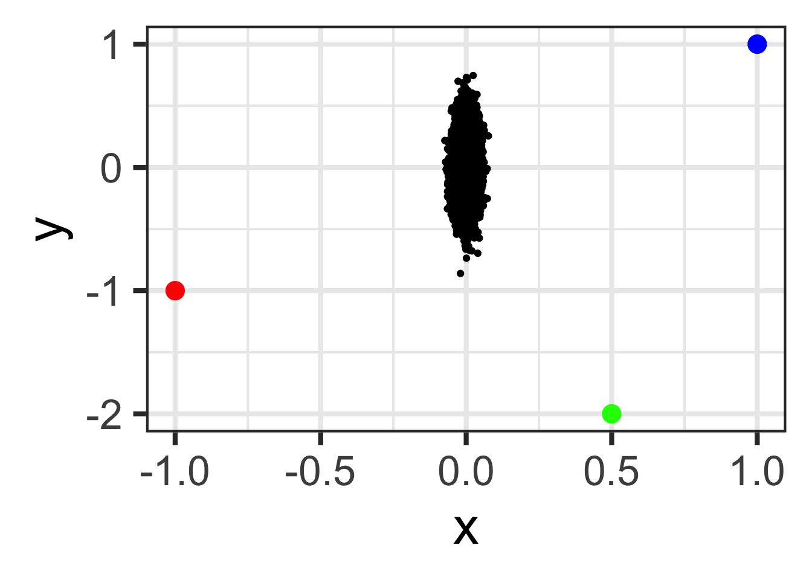
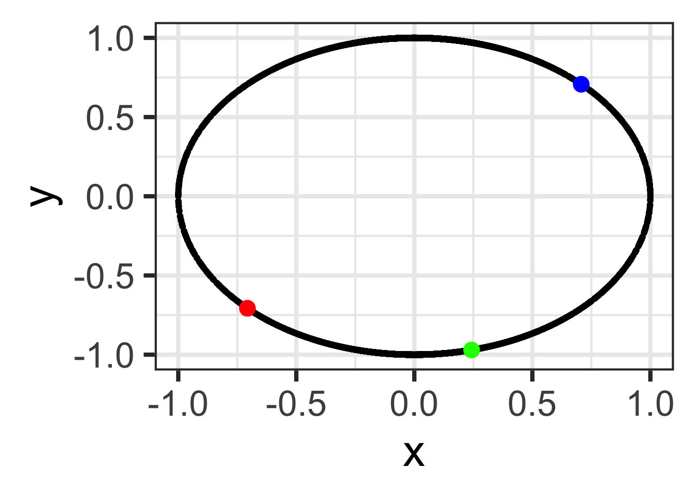
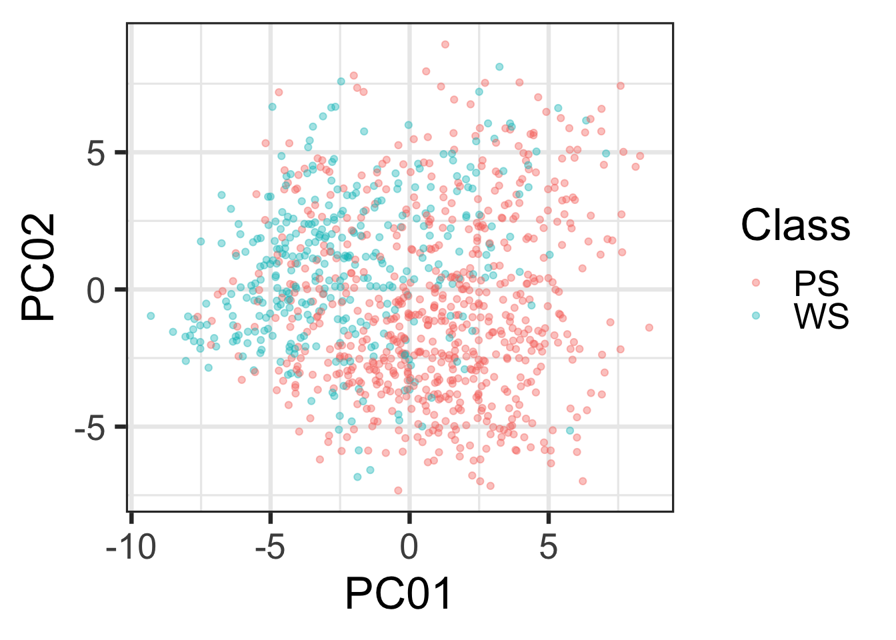
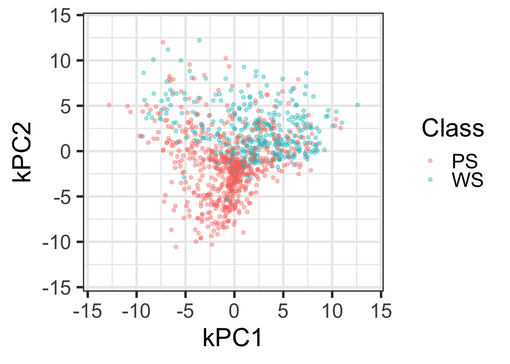

Design Matrices with Recipes
BSMM-8740 - Fall 2023
Recap of last lecture
Last time we worked with exploratory data analysis and then used the tidyverse verbs to engineer features into our datasets.
Today’s Outline
- Introduction to data pre-processing and design/model matrix generation with the
Recipespackage. - Using recipes will facilitate developing feature engineering workflows that can be applied to multiple datasets (e.g. train and test as well as cross-validation sets)
R Model Formulas
A simple formula in a linear model to predict house prices:
The purpose of this code chunk:
- subset some of the data points (
subset) - create a design matrix for 2 predictor variable (but 3 model terms)
- log transform the outcome variable
- fit a linear regression model
The first two steps create the design matrix.
Example design matrix
(Intercept) typeMulti_Family typeResidential sqft
1 1 0 1 836
2 1 0 1 1167
3 1 0 1 796
4 1 0 1 852
5 1 0 1 797
6 1 0 0 1122
7 1 0 1 1104
8 1 0 1 1177
9 1 0 0 941
10 1 0 1 1146
11 1 0 1 909
12 1 0 1 1289
13 1 0 1 871
14 1 0 1 1020Summary: Model Formula Method
- Model formulas are very expressive in that they can represent model terms easily
- The formula/terms framework does some elegant functional programming
- Functions can be embedded inline to do fairly complex things (on single variables) and these can be applied to new data sets.
Model formula examples
(Intercept) typeMulti_Family typeResidential sqft I(sqft^2)
1 1 0 1 836 698896
2 1 0 1 1167 1361889
3 1 0 1 796 633616
4 1 0 1 852 725904
5 1 0 1 797 635209
6 1 0 0 1122 1258884contrast with log(price) ~ type + sqft + sqft^2
Summary: Model Formula Method
There are significant limitations to what this framework can do and, in some cases, it can be very inefficient.
This is mostly due of being written well before large scale modeling and machine learning were commonplace.
Limitations of the Current System
- Formulas are not very extensible especially with nested or sequential operations (e.g.
y ~ scale(center(knn_impute(x)))). - When used in modeling functions, you cannot recycle the previous computations.
- For wide data sets, the formula method can be very inefficient and consume a significant proportion of the total execution time.
Limitations of the Current System
- Multivariate outcomes are kludgy by requiring
cbind - Formulas have a limited set of roles (next two slides)
A more in-depth discussion of these issues can be found in this blog post.
Variable Roles
Formulas have been re-implemented in different packages for a variety of different reasons:
> # ?lme4::lmer
> # Subjects need to be in the data but are not part of the model
> lme4::lmer(Reaction ~ Days + (Days | Subject), data = lme4::sleepstudy)
>
> # BradleyTerry2
> # We want to make the outcomes to be a function of a
> # competitor-specific function of reach
> BradleyTerry2::BTm(outcome = 1, player1 = winner, player2 = loser,
+ formula = ~ reach[..] + (1|..),
+ data = boxers)
>
> # modeltools::ModelEnvFormula (using the modeltools package for formulas)
> # mob
> data(PimaIndiansDiabetes, package = 'mlbench')
> modeltools::ModelEnvFormula(diabetes ~ glucose | pregnant + mass + age,
+ data = PimaIndiansDiabetes)Variable Roles
A general list of possible variable roles could be:
- outcomes
- predictors
- stratification
- model performance data (e.g. loan amount to compute expected loss)
- conditioning or faceting variables (e.g.
latticeorggplot2) - random effects or hierarchical model ID variables
- case weights (*)
- offsets (*)
- error terms (limited to
Errorin theaovfunction)(*)
(*) Can be handled in formulas but are hard-coded into functions.
Recipes
We can approach the design matrix and preprocessing steps by first specifying a sequence of steps.
priceis an outcometypeandsqftare predictors- log transform
price - convert
typeto dummy variables
Recipes
A recipe is a specification of intent.
One issue with the formula method is that it couples the specification for your predictors along with the implementation.
Recipes separate the planning from the doing.
Website: https://topepo.github.io/recipes
Recipes
A recipe can be trained then applied to any data.
> ## Create an initial recipe with only predictors and outcome
> rec <- recipes::recipe(price ~ type + sqft, data = Sacramento)
>
> rec <- rec %>%
+ recipes::step_log(price) %>%
+ recipes::step_dummy(type)
>
> # estimate any parameters
> rec_trained <- recipes::prep(rec, training = Sacramento, retain = TRUE)
> # apply the computations to new_data
> design_mat <- recipes::bake(rec_trained, new_data = Sacramento)Selecting Variables
In the last slide, we used dplyr-like syntax for selecting variables such as step_dummy(type).
In some cases, the names of the predictors may not be known at the time when you construct a recipe (or model formula). For example:
- dummy variable columns
- PCA feature extraction when you keep components that capture \(X\)% of the variability.
- discretized predictors with dynamic bins
Selecting Variables
dplyr selectors can also be used on variables names, such as
Variables can be selected by name, role, data type, or any combination of these.
Example
> rec <- recipe(
+ HHV ~ carbon + hydrogen + oxygen + nitrogen + sulfur,
+ data = biomass_tr
+ )
>
> ss_trans <- rec %>%
+ step_center(carbon, hydrogen) %>%
+ step_scale(carbon, hydrogen) %>%
+ step_spatialsign(carbon, hydrogen)
> # estimate any parameters
> ss_obj <- prep(ss_trans, training = biomass_tr)
> # apply the computations to new_data
> transformed_te <- bake(ss_obj, biomass_te)# A tibble: 80 × 6
carbon hydrogen oxygen nitrogen sulfur HHV
<dbl> <dbl> <dbl> <dbl> <dbl> <dbl>
1 -0.738 0.675 47.2 0.3 0.22 18.3
2 -0.998 0.0696 48.1 2.85 0.34 17.6
3 -0.998 0.0628 49.1 2.4 0.3 17.2
4 -0.331 0.944 37.3 1.8 0.5 18.9
5 0.0541 0.999 42.8 0.2 0 20.5
6 -0.996 0.0874 41.7 0.7 0.2 18.5
7 -0.978 -0.207 54.1 1.19 0.51 15.1
8 -0.669 -0.743 33.8 0.95 0.2 16.2
9 -0.901 -0.433 31.1 0.14 4.9 11.1
10 -0.814 -0.581 23.7 4.63 1.05 10.8
# ℹ 70 more rowsCode
> set.seed(1); n <- 10000
> tmp <- tibble::tibble(
+ x = c(rnorm(n, 0, 0.02), -1, 1, 0.5)
+ , y = c(rnorm(n, 0, 0.2), -1, 1, -2))
>
> tmp %>% dplyr::slice_head(n=-3) %>%
+ ggplot(aes(x=x, y=y)) +
+ geom_point() +
+ geom_point(data=(tmp %>% dplyr::slice_tail(n=3))[1,], color="red", size=5) +
+ geom_point(data=(tmp %>% dplyr::slice_tail(n=2))[1,], color="blue", size=5) +
+ geom_point(data=(tmp %>% dplyr::slice_tail(n=1))[1,], color="green", size=5) +
+ theme_bw(base_size = 32)
>
> rec <- recipe(y ~ x, data = tmp) %>%
+ step_spatialsign(y, x) %>%
+ prep(training = tmp) %>%
+ bake(tmp)
>
> rec %>%
+ dplyr::slice_head(n=-3) %>%
+ ggplot(aes(x=x, y=y)) +
+ geom_point() +
+ geom_point(data=(rec %>% dplyr::slice_tail(n=3))[1,], color="red", size=5) +
+ geom_point(data=(rec %>% dplyr::slice_tail(n=2))[1,], color="blue", size=5) +
+ geom_point(data=(rec %>% dplyr::slice_tail(n=1))[1,], color="green", size=5) +
+ theme_bw(base_size = 32)

Available Steps
- Basic: logs, roots, polynomials, logits, hyperbolics
- Encodings: dummy variables, “other” factor level collapsing, discretization
- Date Features: Encodings for day/doy/month etc, holiday indicators
- Filters: correlation, near-zero variables, linear dependencies
- Imputation: K-nearest neighbors, bagged trees, mean/mode imputation,
Available Steps
- Normalization/Transformations: center, scale, range, Box-Cox, Yeo-Johnson
- Dimension Reduction: PCA, kernel PCA, ICA, Isomap, data depth features, class distances
- Others: spline basis functions, interactions, spatial sign
More on the way (i.e. autoencoders, more imputation methods, etc.)
One of the package vignettes shows how to write your own step functions.
Extending
Need to add more pre-processing or other operations?
If an initial step is computationally expensive, you don’t have to redo those operations to add more.
Extending
Recipes can also be created with different roles manually
Also, the sequential nature of steps means that there don’t have to be R operations and could call other compute engines (e.g. Weka, scikit-learn, Tensorflow, etc. )
Extending
We can create wrappers to work with recipes too:
An Example
Kuhn and Johnson (2013) analyze a data set where thousands of cells are determined to be well-segmented (WS) or poorly segmented (PS) based on 58 image features. We would like to make predictions of the segmentation quality based on these features.
An Example
The segmentationData dataset has 61 columns
A Simple Recipe
> rec <- recipes::recipe(Class ~ ., data = seg_train)
>
> basic <- rec %>%
+ # Correct some predictors for skewness
+ recipes::step_YeoJohnson(recipes::all_predictors()) %>%
+ # Standardize the values
+ recipes::step_center(recipes::all_predictors()) %>%
+ recipes::step_scale(recipes::all_predictors())
>
> # Estimate the transformation and standardization parameters
> basic <-
+ recipes::prep(
+ basic
+ , training = seg_train
+ , verbose = FALSE
+ , retain = TRUE
+ ) Principal Component Analysis1
# A tibble: 59 × 4
variable type role source
<chr> <list> <chr> <chr>
1 AngleCh1 <chr [2]> predictor original
2 AreaCh1 <chr [2]> predictor original
3 AvgIntenCh1 <chr [2]> predictor original
4 AvgIntenCh2 <chr [2]> predictor original
5 AvgIntenCh3 <chr [2]> predictor original
6 AvgIntenCh4 <chr [2]> predictor original
7 ConvexHullAreaRatioCh1 <chr [2]> predictor original
8 ConvexHullPerimRatioCh1 <chr [2]> predictor original
9 DiffIntenDensityCh1 <chr [2]> predictor original
10 DiffIntenDensityCh3 <chr [2]> predictor original
# ℹ 49 more rowsPrincipal Component Analysis
# A tibble: 12 × 4
variable type role source
<chr> <list> <chr> <chr>
1 Class <chr [3]> outcome original
2 PC01 <chr [2]> predictor derived
3 PC02 <chr [2]> predictor derived
4 PC03 <chr [2]> predictor derived
5 PC04 <chr [2]> predictor derived
6 PC05 <chr [2]> predictor derived
7 PC06 <chr [2]> predictor derived
8 PC07 <chr [2]> predictor derived
9 PC08 <chr [2]> predictor derived
10 PC09 <chr [2]> predictor derived
11 PC10 <chr [2]> predictor derived
12 PC11 <chr [2]> predictor derived Principal Component Analysis
# A tibble: 4 × 8
Class PC01 PC02 PC03 PC04 PC05 PC06 PC07
<fct> <dbl> <dbl> <dbl> <dbl> <dbl> <dbl> <dbl>
1 PS 4.86 -5.85 -0.891 -4.13 1.84 -2.29 -3.88
2 PS 3.28 -1.51 0.353 -2.24 0.441 -0.911 0.800
3 WS -7.03 -1.77 -2.42 -0.652 3.22 -0.212 0.118
4 WS -6.96 -2.08 -2.89 -1.79 3.20 -0.845 -0.204Principal Component Analysis
Kernel Principal Component Analysis
Kernel Principal Component Analysis
Distance to Each Class Centroid
Kernel PCA - distance to each centroid
> dist_to_classes <- basic %>%
+ recipes::step_classdist(recipes::all_predictors(), class = "Class") %>%
+ # Take log of the new distance features
+ recipes::step_log(starts_with("classdist"))
>
> dist_to_classes <- recipes::prep(dist_to_classes, verbose = FALSE)
>
> # All variables are retained plus an additional one for each class
> dist_to_classes <- recipes::bake(dist_to_classes, new_data = seg_test, matches("[Cc]lass"))
> dist_to_classes# A tibble: 1,010 × 3
Class classdist_PS classdist_WS
<fct> <dbl> <dbl>
1 PS 1.53 1.74
2 PS 1.35 1.46
3 WS 1.71 1.53
4 WS 1.75 1.61
5 PS 1.47 1.65
6 WS 1.48 1.47
7 WS 1.49 1.55
8 WS 1.55 1.40
9 PS 1.54 1.71
10 PS 1.55 1.57
# ℹ 1,000 more rowsDistance to Each Class
Kernel PCA - distance to each class
> rngs <- extendrange(c(dist_to_classes$classdist_PS, dist_to_classes$classdist_WS))
> ggplot(dist_to_classes, aes(x = classdist_PS, y = classdist_WS, color = Class)) +
+ geom_point(alpha = .4) +
+ xlim(rngs) + ylim(rngs) +
+ # theme(legend.position = "top") +
+ theme_bw(base_size = 16) +
+ xlab("Distance to PS Centroid (log scale)") +
+ ylab("Distance to WS Centroid (log scale)")Recap
- We’ve used the Recipes package to create a workflow for data pre-processing and feature engineering
- The verb
recipedefines the pre-processing and feature engineering steps - using the recipe object, the verb
prepprepares the data on a training set, storing the metaparameters. - the verb bake applies the prepped recipe to new data, using the metaparameters.
R version 4.2.1 (2022-06-23)
Platform: x86_64-apple-darwin17.0 (64-bit)
Running under: macOS Big Sur ... 10.16
Matrix products: default
BLAS: /Library/Frameworks/R.framework/Versions/4.2/Resources/lib/libRblas.0.dylib
LAPACK: /Library/Frameworks/R.framework/Versions/4.2/Resources/lib/libRlapack.dylib
locale:
[1] en_US.UTF-8/en_US.UTF-8/en_US.UTF-8/C/en_US.UTF-8/en_US.UTF-8
attached base packages:
[1] stats graphics grDevices utils datasets methods base
other attached packages:
[1] recipes_1.0.6 dplyr_1.1.2 caret_6.0-94 lattice_0.20-45 mlbench_2.1-3.1
[6] ggplot2_3.4.3 magrittr_2.0.3 knitr_1.42
loaded via a namespace (and not attached):
[1] Rcpp_1.0.10 lubridate_1.9.2 listenv_0.9.0 class_7.3-21
[5] digest_0.6.31 ipred_0.9-13 foreach_1.5.2 utf8_1.2.3
[9] parallelly_1.34.0 R6_2.5.1 plyr_1.8.8 stats4_4.2.1
[13] hardhat_1.3.0 evaluate_0.20 pillar_1.9.0 rlang_1.1.0
[17] data.table_1.14.8 rstudioapi_0.14 kernlab_0.9-32 rpart_4.1.19
[21] Matrix_1.5-3 rmarkdown_2.22 labeling_0.4.2 splines_4.2.1
[25] gower_1.0.1 stringr_1.5.0 htmlwidgets_1.6.1 munsell_0.5.0
[29] compiler_4.2.1 xfun_0.37 pkgconfig_2.0.3 globals_0.16.2
[33] htmltools_0.5.4 nnet_7.3-18 tidyselect_1.2.0 tibble_3.2.1
[37] prodlim_2019.11.13 codetools_0.2-19 fansi_1.0.4 future_1.31.0
[41] withr_2.5.0 MASS_7.3-58.2 ModelMetrics_1.2.2.2 grid_4.2.1
[45] nlme_3.1-162 jsonlite_1.8.4 gtable_0.3.3 lifecycle_1.0.3
[49] pROC_1.18.4 scales_1.2.1 future.apply_1.10.0 cli_3.6.0
[53] stringi_1.7.12 farver_2.1.1 reshape2_1.4.4 timeDate_4022.108
[57] ellipsis_0.3.2 generics_0.1.3 vctrs_0.6.3 lava_1.7.2.1
[61] iterators_1.0.14 tools_4.2.1 glue_1.6.2 purrr_1.0.1
[65] parallel_4.2.1 fastmap_1.1.1 survival_3.5-3 yaml_2.3.7
[69] timechange_0.2.0 colorspace_2.1-0